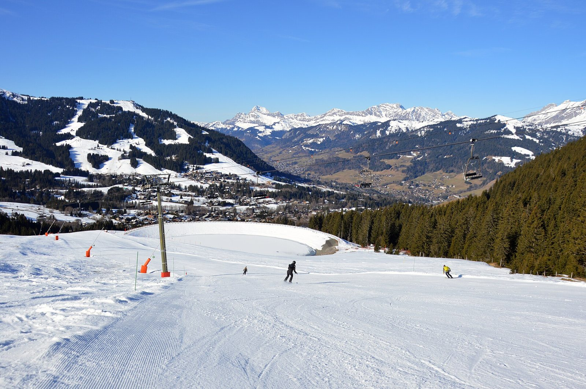
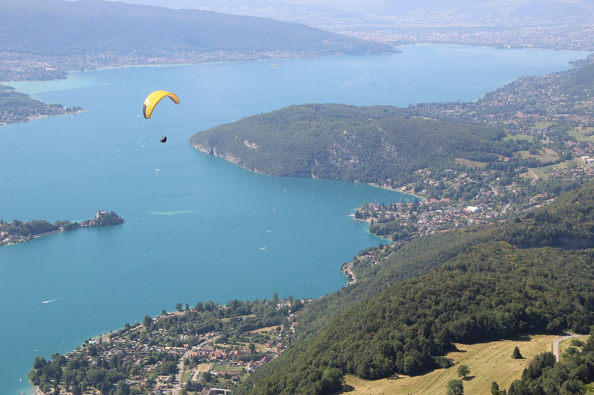
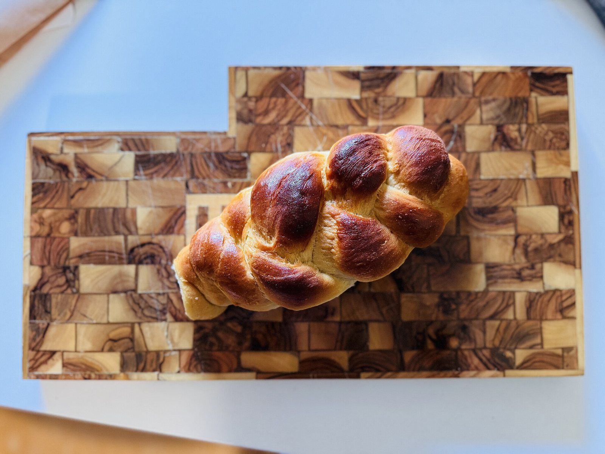
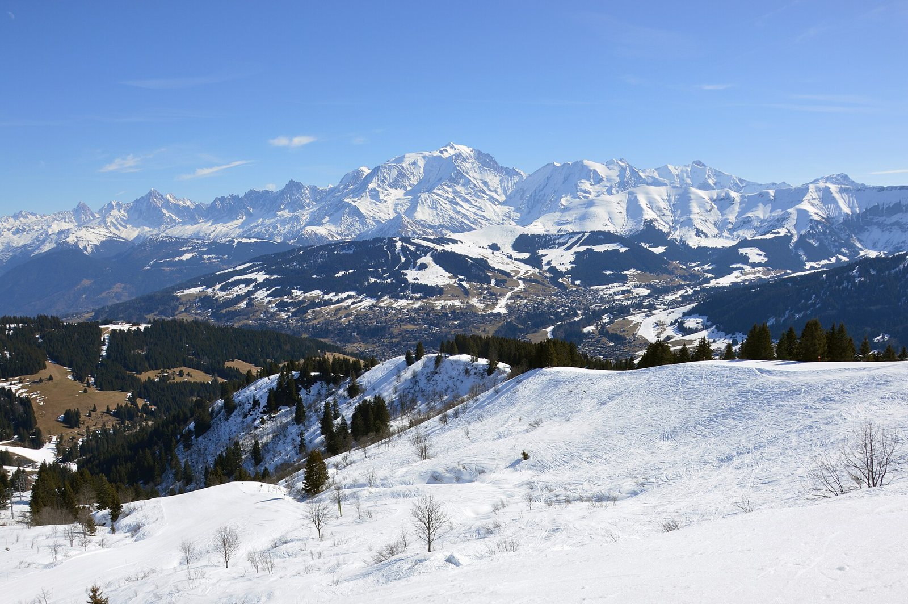

Home / The French Alps, strictly kosher / A kosher vacation in the French Alps
A kosher vacation in the French Alps
you choose the resort and the dates, we take care of everything kosher
You want a kosher vacation abroad without a kosher hotel: a chalet or an apartment of your own, in a real ski resort in winter or by a lake in summer, and the certainty that food, Shabbat and prayer are taken care of. That is what Mishpacha Tours organises in the French Alps, two to three hours from Lyon: a private chef in your chalet or hot meals delivered to your door, Shabbat meals with challot and wine, the holidays, a minyan and a Sefer Torah when several families share a resort. Our kosher team is based in the Alps. You send your resort, your dates and your group; you receive one written quote, the same day. Stays, transfers and meals are organised and invoiced by our kosher team based in the Alps; Mishpacha Tours sells its guided tours in Lyon.
- Chalet or apartment, not a hotel
- Chef, meals, Shabbat, minyan
- Val Thorens, Courchevel, Alpe d'Huez, Annecy
- Checked 8 October 2026

Why a chalet instead of a kosher hotel
- You pick the resort. Kosher hotels open in two or three resorts for a few weeks. With your own chalet or apartment, you choose Val Thorens, Courchevel, Megève, Alpe d'Huez, Les Deux Alpes or any other resort, on your dates.
- You pick the dates. Hanukkah, the February school holidays, Purim, Pesach, or a quiet week in January: the resort is open from late November to April, the lakes from June to September.
- You keep your family to yourself. Your table, your schedule, your rooms. The chef comes to you; the meals come to you; the minyan is built with the families around you.
- It costs what you use. You pay the accommodation you booked, then the kosher services you ask for: a chef for the week, meals for some days only, Shabbat only. One written quote before you commit.
What we organise, winter and summer
- A private chef in your chalet. Our team makes the kitchen kosher, the chef cooks on site, every meal of the week is taken care of.
- Hot meals delivered. To your apartment or your hotel, for a family or a group, for the week or for some days, with notice.
- Shabbat. Shabbat meals, challot and wine delivered on Friday before candle lighting. Nothing is delivered on Shabbat.
- The holidays in the mountains. Hanukkah candles and a lighting, a Megillah reading and a Purim meal, Pesach on request.
- A minyan and a Sefer Torah. Courchevel 1850 and Megève have a Chabad house in winter. Elsewhere, when several families are in the same resort, the team groups them and brings a Sefer Torah, in winter and in summer.
- A tailor-made stay, A to Z. Chalet, chef or delivered meals, transfers, Shabbat, holidays, minyan: one request, one quote. Families and groups from abroad are our core.
Strictly kosher. Our team in the Alps cooks under the Chabad network of the Alps; ask for the supervision details in writing with your quote. Shomer Shabbat: everything is set before candle lighting.
Winter: the ski resorts
Val Thorens (2,300 m, the highest resort in Europe), Courchevel and Méribel in the Three Valleys; Alpe d'Huez and Les Deux Alpes on the Grenoble side; Megève and Chamonix near Mont Blanc; Tignes, Val d'Isère, La Plagne and Les Arcs in the Tarentaise. All of them are two to three hours from Lyon-Saint-Exupéry airport. Resort by resort: Val Thorens, Courchevel, Megève, Alpe d'Huez, Les Deux Alpes, and the full picture on kosher ski holidays in the French Alps.
Summer: lakes and mountains
Lake Annecy, Aix-les-Bains and Grenoble have a published community; the high resorts open their lifts for hikers from late June to late August, and Les Deux Alpes and Alpe d'Huez have welcomed kosher summer guests for decades. We organise meals, Shabbat and a minyan for your dates there too: summer in the Alps for Jewish families.
How it works
- 1
Tell us
Resort, dates, number of people, your chalet or apartment, and what you need: a chef, delivered meals, Shabbat, a holiday, a minyan. By WhatsApp or with the form at the bottom of this page.
- 2
We put it together
The same day, we check with our team in the Alps what is possible for your dates and your resort. One contact from start to finish, in English, French or Hebrew.
- 3
You get one quote
The price depends on the resort, the dates, the number of people and the menu. You receive a written quote before you commit to anything.
Landing in Lyon
Most families fly into Lyon-Saint-Exupéry, two to three hours from the resorts. Kosher shopping, shuttles and drive times are on Lyon, the gateway to the Alps; flights and what to do with a few hours on flights to Lyon. A private 3 hour tour of Jewish Lyon, with the Grande Synagogue, fits between the plane and the drive: the Stopover, 390 € per group.




Kosher vacation in the Alps: questions
Is this a kosher hotel?
No. You book your own chalet, apartment or hotel in the resort of your choice. We organise the kosher side there: chef, delivered meals, Shabbat, holidays, minyan.
Which resorts?
Val Thorens, Courchevel, Méribel, Les Menuires, Megève, Alpe d'Huez, Les Deux Alpes, Chamrousse, Serre Chevalier for sure; Tignes, Val d'Isère, La Plagne, Les Arcs, Chamonix on request. Send your dates, we answer the same day.
How much does it cost?
It depends on the resort, the dates, the number of people and the menu. You receive a written quote before you commit. A family asking for Shabbat meals only pays for Shabbat meals only.
We are two people. Can you still help?
Tell us. For a very small group asking for a single delivery high in a resort, logistics sometimes make it impossible; we say so honestly and point you to the nearest published kosher option.
Is the food strictly kosher?
Yes. Our team in the Alps cooks under the Chabad network of the Alps. Ask for the supervision details in writing with your quote.
Do you sell the trip itself?
No. Flights, transfers and accommodation are yours to book. Stays and meals organised by our team in the Alps are quoted and invoiced by them.
Keep reading
Sources: les3vallees.com and the resorts' tourist offices for altitudes and seasons; synalpes.wordpress.com for the Chabad houses of Courchevel and Megève; AFP (23 August 2026) for kosher summer guests in Les Deux Alpes and Alpe d'Huez; our team in the Alps for the services. Compiled by Mishpacha Tours from these sources. Checked 7 October 2026.